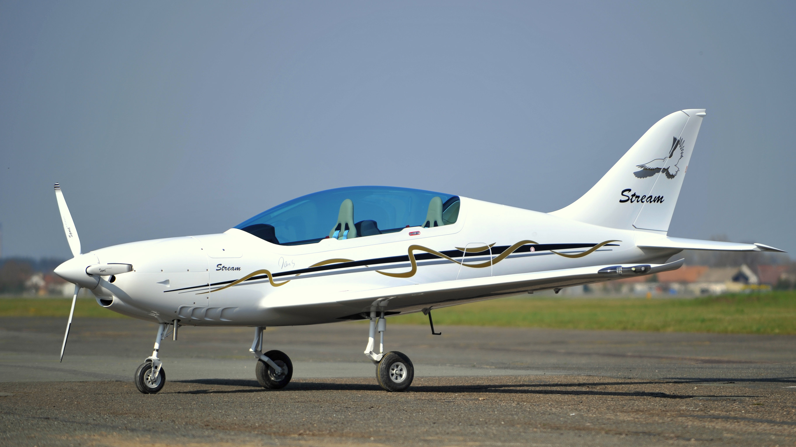
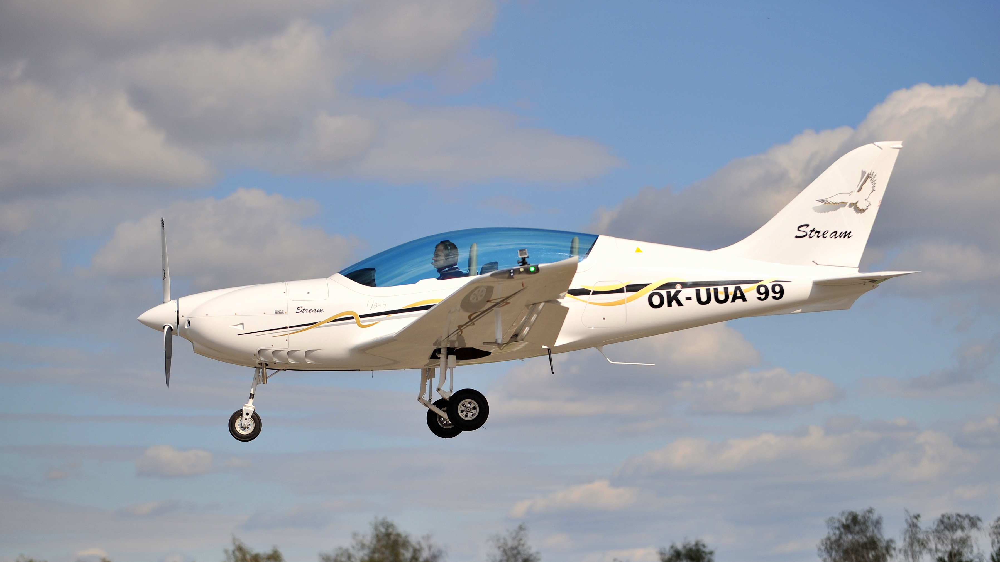
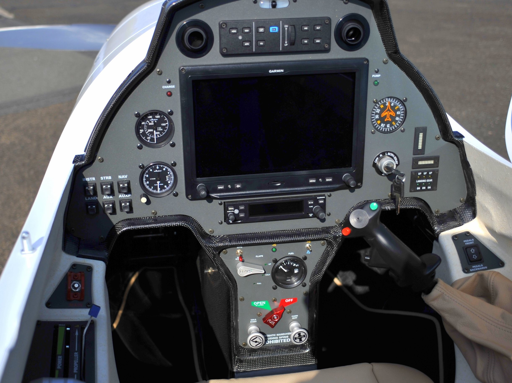
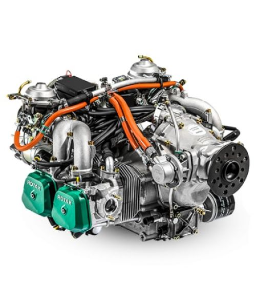

TL Stream


As soon as you sit inside one of our Streams you will get to experience the fighter jet pilot feeling. Tandem seating and sophisticated outline of the aircraft, state of the art glass cockpit and stick furnished with many control devices are just a few features that stand behind the impeccable design, aerodynamic purity and precision in steering and control. Robust landing gear, ROTAX 912ULS engine and the PowerMax propeller can only mean the following - safety, high speed, and the incredible experience of flying! The Stream is the future. The Stream is setting a new trend in ultralight flying.
We are giving it our all and are currently marrying all our knowledge, craftsmanship, strength and energy to finalize our newest aircraft. The Stream will be our highest technical achievement to date and will become the flagship of TL-ULTRALIGHT. We are thrilled knowing that yet again we have managed to set new benchmarks in ultralight aviation - its name is Stream!

TL Stream specifications
Wingspan .... 9m
Length .......... 6.79m
Height .......... 2.475m
Empty weight 297kg
Max takeoff weight 600kg
Fuel .............. 92 litres
VNE...……… 185 knots
Max continuous 135 knots
Stall full flaps 37 knots
Takeoff roll …. 175m
Landing over 50' obstacle 300m
Rate of climb 1000+ fpm
Endurance 5+ hours
Wingspan .... 9m
Length .......... 6.79m
Height .......... 2.475m
Empty weight 297kg
Max takeoff weight 600kg
Fuel .............. 92 litres
VNE...……… 185 knots
Max continuous 135 knots
Stall full flaps 37 knots
Takeoff roll …. 175m
Landing over 50' obstacle 300m
Rate of climb 1000+ fpm
Endurance 5+ hours
[Home]

